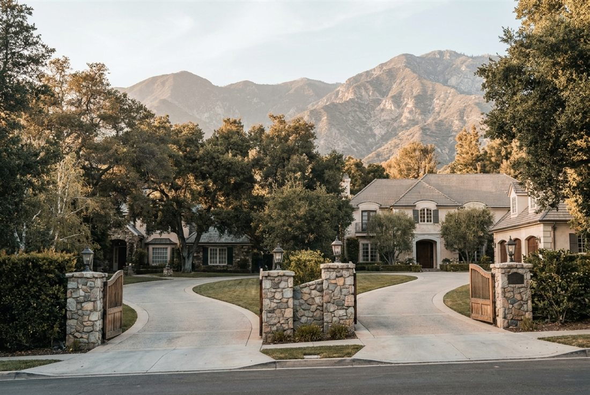

Pasadena & the Foothills
Ranges, cooktops, wall ovens, refrigerators, freezers, and Freedom columns, handled by certified techs whose route already includes your street. Failing refrigeration earns same day priority, and each repair carries our written 3 year guarantee out the door.

A La Cañada household schedule is a machine of its own, and the kitchen is its engine room. Our foothill route reserves time here every week, so the engine room never sits broken for long.
The Noble routine does not vary by zip code. Instruments before opinions, genuine parts riding on the truck, floors and millwork shielded from door to door, and a 3 year written guarantee handed over with the invoice. What the paperwork cannot capture is the rest of it. Honest recommendations, unhurried explanations, and the small corrections we make along the way simply because we saw they were needed. La Cañada Flintridge holds its homes to a standard. So do we.
Ovens losing heat or baking crooked, Star Burners clicking without flame, simmers that die, doors that sag. Certified hands return the fire to factory spec.
Cooking repairsCompartments going warm, freezers losing zero, columns drifting apart, leaks, ice makers, tired gaskets. Instruments find it and factory parts end it.
Refrigeration repairsSix commitments, kept on every job without exception.
Training is not a one time event here. Noble techs recertify on current Thermador cooking and refrigeration platforms every single year.
Factory components from authorized sources, with the high turnover parts living on the truck. First visit completions are the direct result.
Three years on parts and labor, written down. If our repair does not hold, the next visit costs you nothing.
Floor runners, shoe covers, padded protection on panels and counters. We clean up, explain the work, and leave the room better than we found it.
$89, quoted upfront, credited in full against any repair you approve. Knowledge should not cost extra.
Every day from 7am to 7pm. Failing refrigeration jumps the queue, because food and time both spoil.
Flintridge · Alta Canyada · The Sagebrush district
Absolutely. Unmarked vehicles on request, clearances already in place for gated La Cañada Flintridge communities, and easy coordination with household staff. We aim to leave a working kitchen and no other evidence.
Runners down before tools come out, shoe covers at the threshold, padding on panels and stone. Custom cabinetry gets treated as unrepeatable, because it usually is.
Tell the scheduler and the La Cañada Flintridge board gets reshuffled around you, typically same day or next morning, weekends included. Keep the doors closed until we arrive. (747) 444-3123.
A written 3 year guarantee on parts and labor, plus the $89 diagnostic folding into the price of any repair you approve.
One phone call and the problem becomes ours. Open daily, 7am to 7pm.
First callers get first pick of the same day windows. The $89 diagnostic credits toward the repair, so the answer itself ends up costing nothing.